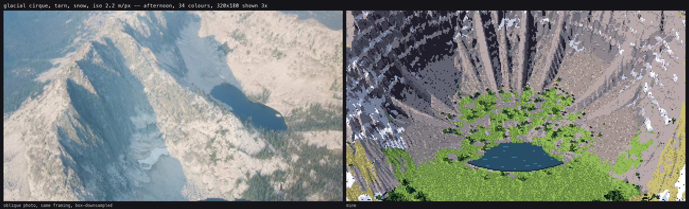
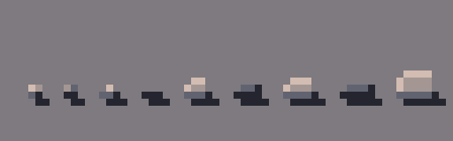
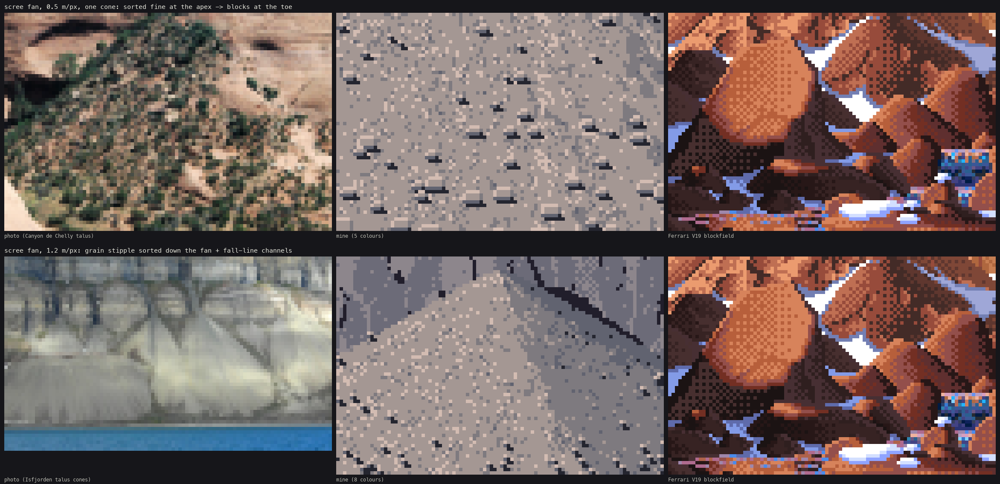
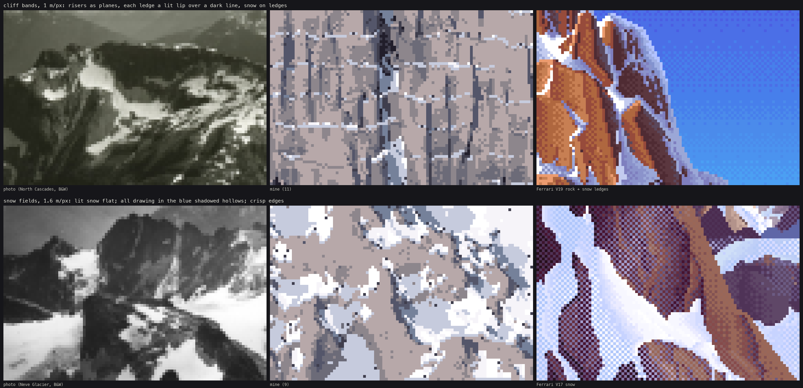

Back to the field guide. Code: ~/work/pixelart-studies/aerial/lib/tech_ground.py, lib/tech_rock.py, lib/dither.py, and the cirque, talus-cone, banded-cliff and snowfield builders in lib/subjects.py. Studies: studies/scree.png, studies/cliff_snow.png.
My mountain results are weaker than my forest and water, and I'll say where. But four things here worked, and each is worth having: slope tone as posterised planes, stones on a quiet matrix, ledges as strips, and snow drawn by its shadows. There's also one lesson about building landforms.

The cirque plate, second round: the Sawtooth photo, and mine.
From 30° down and farther, a slope has no outline. It reads by tone planes: every facet facing the sun is one flat light value, every facet turned away is one flat shadow value, and the turn between them is narrow. On the Sawtooth photo, lit granite is L* 85 (warm) and shaded granite is 51 (blue), and each is flat within itself.
So the step coordinate comes from n·l in the lit family and from sky view in the shadow family, with a jump at the terminator. It's then posterised: flat_bands holds each step flat and dithers only a narrow seam around the half step.
def form_coordinate(ndl, sunvis, skyview, nsteps, ao=None):
ns = nsteps // 2; nl = nsteps - ns
lit = (ndl > 0.06) & (sunvis > 0.5)
xs = np.clip(skyview, 0, 1) * (ns - 1 + 0.49) # shadow family 0 .. ns-1
xl = ns + np.clip((ndl - 0.06) / 0.9, 0, 1) * (nl - 1 + 0.49) # lit family ns .. n-1
return np.where(lit, xl, xs), lit, ns
def flat_bands(x, thr, seam=0.18):
f = np.floor(x); frac = x - f
t = np.clip((frac - (0.5 - seam / 2)) / seam, 0, 1)
return (f + (t > thr)).astype(np.int32)
s = flat_bands(x, thr, seam)
s = np.where(lit, np.clip(s, ns, n - 1), np.clip(s, 0, ns - 1)) # never dither across the terminator
Use Bayer 4×4 thresholds for rock and snow (hard, precise things, seam=0.22) and blue noise for organic ground (seam=0.35). On top of that come the cavity tone (gullies a step down, spurs a step up in the light, see how-to 4 §4) and sparse fall-line flecks on rock: a dark pixel with a lighter one uphill of it, at 3.5% density.
My first cirque was noise with a bowl and came out as a round crater with a ring of snow (notebook 057, 058). A cirque's identity is its profile, so write the profile: the tarn floor, then a concave scree apron (reaching further out under the gullies), then a 55–65° headwall terraced into cliff bands and notched by gullies, then the crest, high at the back and open toward the camera. See subjects.cirque and POST.md §9. The talus cone (talus_cone), the banded cliff (banded_cliff) and the cove (coast) are built the same way.
After building a scene, print the material fractions in the frame. My first cirque painted rock 54%, snow 2% and ledges 0.1%, so almost nothing I had designed was in the picture.
The photos (Canyon de Chelly, Isfjorden): a fan is sorted, fine at the apex and blocks at the toe. From far away only texture density says "scree". It's striped along the fall line by debris channels.
The dead end first. I shaded Voronoi cells as stones everywhere, and the fan read as a cobbled street (notebook 068). A real talus is mostly a quiet matrix with blocks scattered on it.
What worked:
def stone_sprite(w, lit, side):
"""a flat lit top row with its ends cut at 45 deg, a mid body, a dark bottom row;
the sun-side end one step lighter, the shade-side end one step darker."""
h = max(2, int(round(w * 0.65)))
top, mid, bot = (4, 3, 1) if lit else (2, 1, 0)
...
# cast shadow on the matrix: a dark row under the stone, shifted to the shade side

Stones 2–6 px wide at 8×, each lit and then in shade (code/figs.py).
The bug: the first stones were invisible. The occlusion test hides objects behind ridges by comparing an object's depth with the terrain's depth. On a 30° slope seen from 30°, a tolerance of 2× the stone's size hid nearly all of them. It needs about 6× plus 8 px of footprint.

The scree study. Top: one talus cone at 0.5 m/px, beside the Canyon de Chelly talus and Ferrari's V19 blockfield. Bottom: the grain and channels at 1.2 m/px, beside Isfjorden.
A banded cliff from above is a stack of risers, which are planes, lit or shaded as one value, and ledges. Each ledge is a strip: snow (lit 4 / shade 2, its front edge a step down) or a lit rock lip. The first riser pixel under it goes a step down.
L = rockmask & ledge
below = np.zeros_like(L); below[1:] = L[:-1]
top_of_riser = rockmask & below & ~L
cv.step[L & ~snowy] = np.clip(np.maximum(st[L & ~snowy] + 1, 3), 0, 5)
cv.step[top_of_riser] = np.maximum(cv.step[top_of_riser] - 1, 0)
cv.fill(L & snowy, "snow", np.where(lit, 4, 2))
Bricks. With isotropic planar facets (every Voronoi cell a tilted plane, landform.facets), the risers read as a brick wall. Stretching the facets along the fall line (facets(X * 1.6, Y * 0.5, ...), cells about 3:1) made them read as flutes, like the Cascades photos. I did this only in banded_cliff. The cirque's headwall still uses isotropic facets.
The photos (Sawtooth, Neve Glacier, North Cascades): lit snow is flat, one value or two. Shaded snow is L* 76, still far above shaded rock, and blue. The shapes of the shadowed hollows do all the drawing.
s = np.where(ndl > 0.55, 5, 4); s = np.where(ndl < 0.2, 3, s) # lit snow: two flat values (+ a half step)
core = sh & (ndl > -0.25) # just past the terminator
s = np.where(sh, np.where(core, 1, 2), s) # core, then reflected light deeper in
s = np.where(~sh & (conc < -2.0) & (s >= 4), 3, s) # hollows the sun still reaches
s = np.where(lip, np.where(sunlit, 3, 1), s) # the downhill edge: a darker lip
poke = edge_zone & (tb < 0.04) # a few rocks poke through along the edge
Two things that went wrong first:

The cliff and snow study. Top: fluted risers, lit lips and snow strips. Bottom: a snowfield at 1.6 m/px, beside the Neve Glacier and Ferrari's V17.
plate_cirque_far).talus_cone study does.